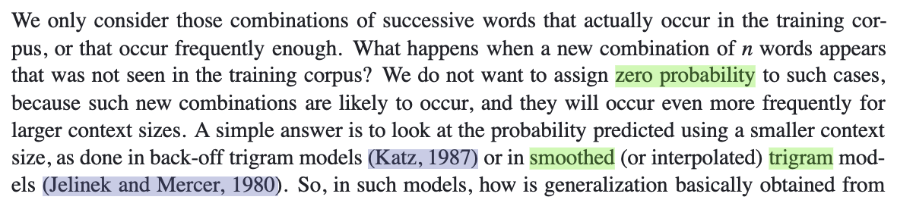
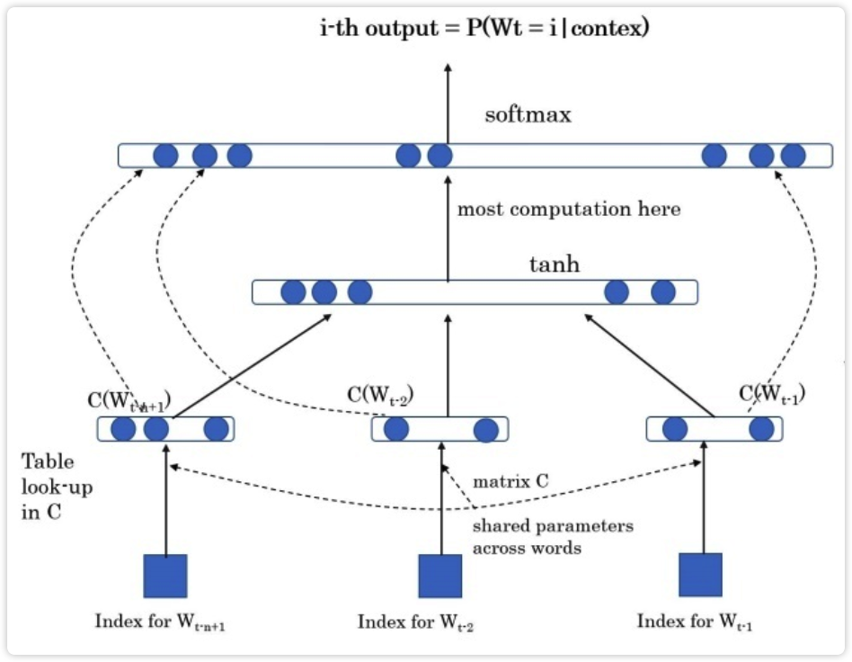
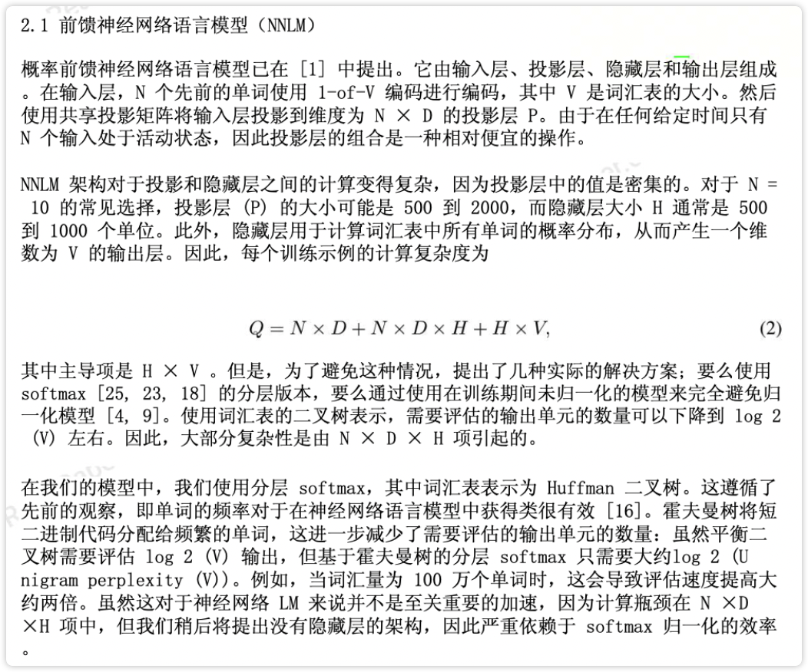
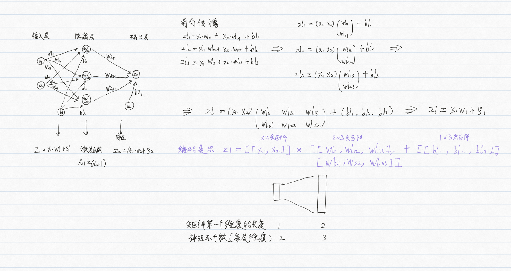
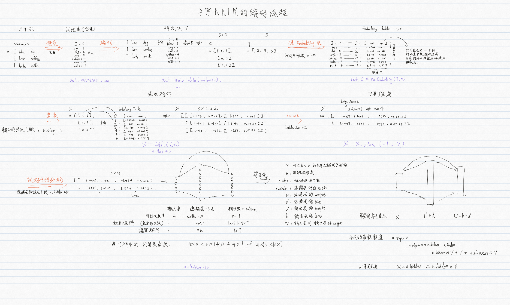
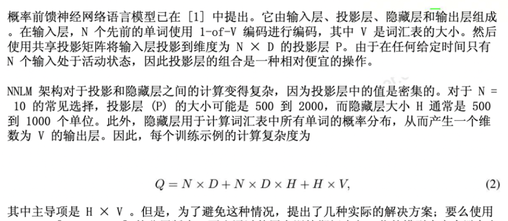
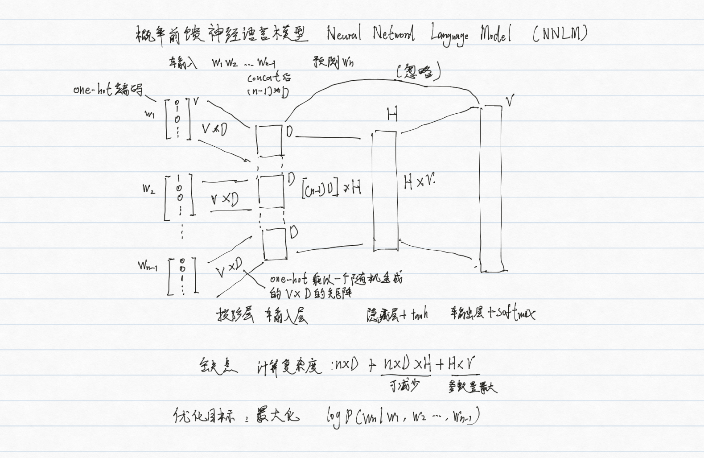
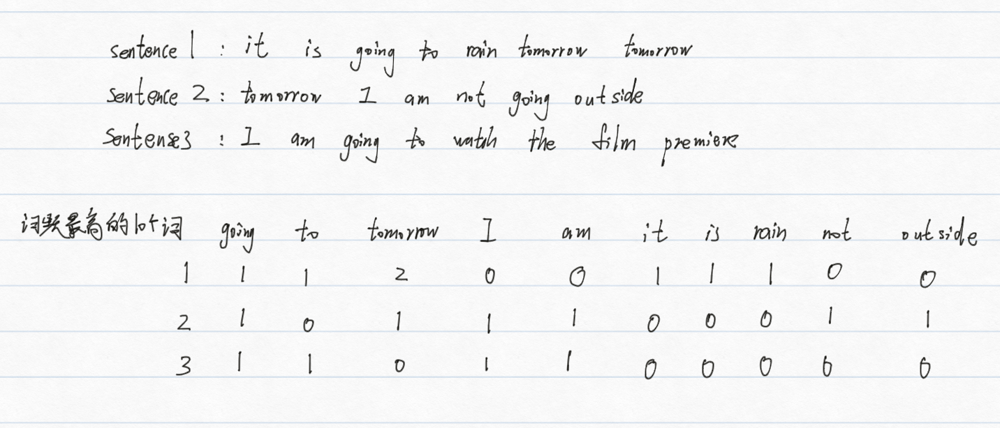
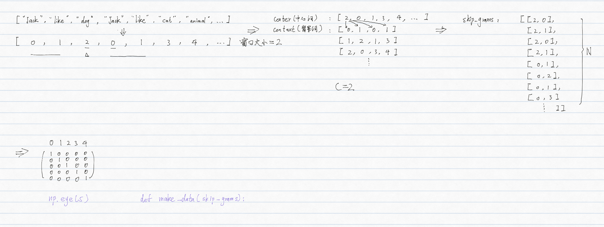
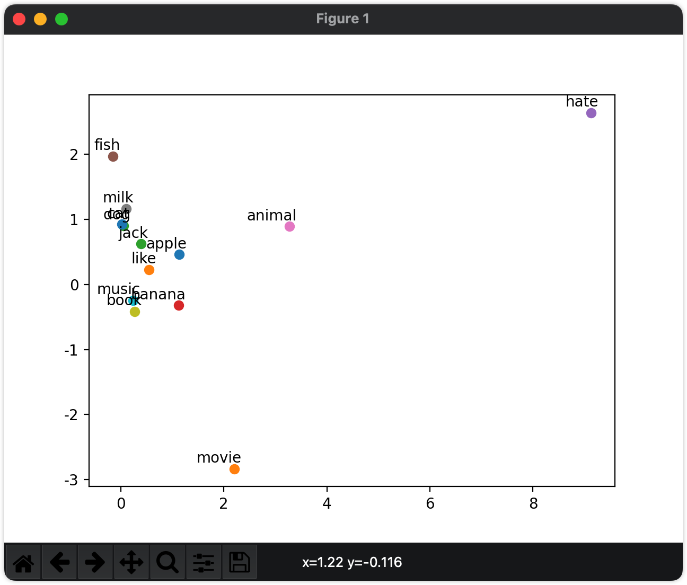

word2vec
统计语言模型¶
什么是语言模型?
用于解决两个语言任务的模型
预测一句话: “判断这个词的磁性” 和 “判断这个词的词性” 哪个句子出现的概率更大
预测一个词: "判断这个词的__" 接下来出现字典中哪个词的概率更大
共性: 都是分类任务
解决上述两个问题的语言任务的模型有哪些?
统计语言模型
神经网络语言模型
如何计算下面4句话中"的"后面为"词性"和"磁性"的哪个概率更大?
单词的词性
词性是名词
磁铁很强的磁性
电池的词性是名词
$$ P(词性|的) = \frac{count(词性, 的)}{count( 的)} = \frac{2}{3}\(\(<br />\)\)P(磁性|的) = \frac{count(磁性, 的)}{count( 的)} = \frac{1}{3}$$
"的"后面为"词性"的概率更大
统计语言模型是如何解决第一个问题的?
条件概率的链式法则
eg.
有一个包含 n 个句子的语料库,
“判断这个词的磁性” 和 “判断这个词的词性” 哪个句子出现的概率更大?
\((P(这个|判断) = \frac{count(判断, 这个)}{count( 判断)} (\(<br />\)\)P(w_1, w_2, ..., w_n) = \prod_{i=1}^{n} P{(wi|w1, w2, ..., w_{i-1})}\)\)
选择联合概率更大的那个句子
统计语言模型是如何解决第二个问题的?
条件概率
eg.
有一个包含 n 个句子 和 m个单词的字典,
"判断这个词的__" 接下来出现字典中哪个词的概率更大
\(\(P(w_{next}|w_1, w_2, ..., w_n) = \frac{count(w_{next}, 判断, 这, 词, 的)}{count(判断, 这个, 词, 的)} , 其中Wnext为遍历字典中的每一个词\)\)
选择条件概率最大的那个词
统计语言模型存在问题和解决方法?
问题:
字典长度非常大,当统计到词性这个词时
P(词性| “判断”，“这个”，“词”，“的”，……) => 时间和成本太高
解决:
n 元语言模型(n_gram模型): 有m个词, 只取n个词
"计算下面4句话中"的"后面为"词性"或"磁性"的概率"这个任务用的是几元语言模型
2元
"的"后面: 2个词, 二元语言模型
"词的"后面: 3个词, 三元语言模型(trigram)
如果所求的词是词库中没有的词, 出现零概率问题(0/0)的情况怎么办?
平滑策略
eg.
$$ P(w_{i}|w_{i-1}) = \frac{count(w_{i-1})+1}{count(w_{i-1})+|v|} $$
复杂的平滑策略: Laplace smoothing(拉普拉斯平滑), Lidstone...

图1: A Neural Probabilistic Language Model(2003) 原文
神经网络语言模型¶
第一个解决了上述两个问题的神经网络语言模型是什么?
NNLM
神经网络模型: Neural Netword Language Model

图1: A Neural Probabilistic Language Model(2003) 原图
图2: Efficient Estimation of Word Representations in Vector Space(2013) 原文
NNLM是如何解决上述第两个问题的?
第一步: 将n-1个单词的索引转换为词向量
第二步: concat
X = [ x1, x2, x3, x4,... ,xn ]
第三步: 双层神经网络 + 残差网络
\(\(V\)\)=[ "判断", "这个", "词", "的", "词性" ]
第一层: tanh(HX+d)
第二层: softmax ([tanh(HX+d)]U + d+ WX) == [0.1, 0.2, 0.1, 0.3, 0.4] \(\(\in[1, V_L]\)\)
回顾一个双层神经网络的训练流程?

根据上面步骤手写NNLM的编码流程, 用以下面3句子作为训练数据, 输入i like, 输出dog.
sentences = ["i like dog", "i love coffee", "i hate milk"]

通过pytorch构建一个NNLM, 用以下面3句子作为训练数据, 输入i like, 输出dog.
尝试输入like love查看输出结果
sentences = ["i like dog", "i love coffee", "i hate milk"]
# code by jarrycf @niit
'''
输出:
[[0, 6], [0, 3], [0, 1]]
1000 0.014071048237383366
1000 0.006654839031398296
['dog', 'coffee', 'milk']
['coffee']
'''
import torch
import torch.nn as nn
import torch.optim as optimizer
import torch.utils.data as Data
dtype = torch.FloatTensor
# 1. 构建词汇表
sentences = ["i like dog", "i love coffee", "i hate milk"]
# ['i', 'like', 'dog', 'i', 'love', 'coffee',...]
sentences_list = " ".join(sentences).split()
vocab = list(set(sentences_list))
word2idx = {w: i for i, w in enumerate(vocab)}
'''
{
'i': 0
'like': 1
'dog': 2
'love': 3
'coffee': 4
'hate': 5
'milk': 6
}
'''
idx2word = {i: w for i, w in enumerate(vocab)}
V = len(vocab)
# 2. 确定X, Y
def make_data(sentences):
input_data = []
target_data = []
# sentences = ["i like dog", "i love coffee", "i hate milk"]
for sen in sentences:
sen = sen.split() # ['i', 'like', 'dog']
input_tmp = [word2idx[w] for w in sen[:-1]] # [[0, 1]]
target_tmp = word2idx[sen[-1]] # [2]
input_data.append(input_tmp)
target_data.append(target_tmp)
return input_data, target_data
input_data, target_data = make_data(sentences)
print(input_data)
input_data, target_data = torch.LongTensor(
input_data), torch.LongTensor(target_data)
# 3. dataset
dataset = Data.TensorDataset(input_data, target_data)
# 4. dataload
loader = Data.DataLoader(dataset, 2, True)
# 5. 定义网络结构
# parameter
m = 2
n_step = 2
n_hidden = 10
class NNLM(nn.Module):
def __init__(self):
'''
V：词汇表的大小，即语料库中去重后的单词个数
m：词向量的维度，一般大于50
H：隐藏层的weight
d：隐藏层的bias
U：输出层的weight
b：输出层的bias
W：输入层到输出层的weight
h：隐藏层神经元个数
'''
super(NNLM, self).__init__()
self.C = nn.Embedding(V, m)
# nn.Paramete默认参数requires_grad=True, 在方向传播中自动计算梯度
self.H = nn.Parameter(torch.randn(n_step * m, n_hidden).type(dtype))
self.d = nn.Parameter(torch.randn(n_hidden).type(dtype))
self.b = nn.Parameter(torch.randn(V).type(dtype))
self.W = nn.Parameter(torch.randn(n_step * m, V).type(dtype))
self.U = nn.Parameter(torch.randn(n_hidden, V).type(dtype))
def forward(self, X):
'''
X : [barch_size, n_step]
'''
X = self.C(X) # [batch_size, n_step, m]
X = X.view(-1, n_step * m) # [batch_size, n_step * m]
# 隐藏层: tanh(XH+d)
hidden_out = torch.tanh(torch.mm(X, self.H) + self.d)
# 输出层: softmax (hidden * U + d + XW)
output = torch.mm(hidden_out, self.U) + self.b + torch.mm(X, self.W)
return output
model = NNLM()
optim = optimizer.Adam(model.parameters(), lr=1e-3)
criterion = nn.CrossEntropyLoss()
# 6. 模型训练
for epoch in range(1000):
for batch_x, batch_y in loader:
pred = model(batch_x)
loss = criterion(pred, batch_y)
if (epoch + 1) % 1000 == 0:
print(epoch + 1, loss.item())
optim.zero_grad()
loss.backward()
optim.step() # 根据当前的参数梯度信息，更新模型中的参数
# 7. 模型预测
pred = model(input_data).max(1, keepdim=True)[1]
print([idx2word[idx.item()] for idx in pred.squeeze()])
'''
预测结果过程
=> model(input_data)
tensor([[-5.2228, -0.6685, -1.4815, -3.3014, -0.9889, 4.8275, -1.3545],
[-3.3357, 5.4271, -2.5973, -2.6110, 0.9228, -1.4809, -1.7979],
[-8.5480, -1.6075, -3.1393, -4.1746, 3.1858, -3.8107, -2.6344]],
=> .max(1)
(values = tensor([5.7182, 5.4525, 4.1372], indices=tensor([2, 1, 4]))
=> keepdim = True
(values = tensor([[5.7182], [5.4525], [4.1372]], indices=tensor([2], [1], [4]]))
=> [1]
tensor([2], [1], [4]])
=> .squeeze()
tensor([2, 1, 4])
=> for idx in tensor([2, 1, 4])
<generator object <genexpr> at 0x10afc9b60> # tensor(2)
=> .item(tensor(2))
2
=> idx2word[2]
['dog']
'''
# 尝试输入like love查看输出结果
input_data = ["like", "love"]
input_data = [word2idx[w] for w in input_data] # [[0, 1]]
input_data = torch.LongTensor(input_data)
pred = model(input_data).max(1, keepdim=True)[1]
print([idx2word[idx.item()] for idx in pred])
通过 pytorch 实现的 NNLM 和原论文中的 NNLM 有哪些异同点?
不同点:
- 训练数据的构造方式不同：原论文中的 NNLM 是基于 n-gram 模型构造的训练数据，而这段代码中的 NNLM 是基于句子构造的训练数据。
- 输入层的构造方式不同：原论文中的 NNLM 使用的是词袋模型（bag-of-words）对输入层进行编码，而这段代码中的 NNLM 使用的是词嵌入（word embedding）对输入层进行编码 原论文采用的是传统的基于矩阵乘法的词嵌入方法, 也被称为全连接层方法. 在这个方法中每个单词都被表示为一个 one-hot 向量，随机初始化一个权重矩阵，将 one-hot 向量乘以权重矩阵得到单词的词向量表示 我们采用的是PyTorch 中的 nn.Embedding 使用的是基于查表的词嵌入方法，也被称为嵌入层方法. 在这个方法中，每个单词都被映射为一个固定维度的向量，这个向量可以通过训练神经网络来得到，也可以使用预训练好的词向量
- 隐藏层的激活函数不同：原论文中的 NNLM 使用的是 sigmoid 函数作为隐藏层的激活函数，而这段代码中的 NNLM 使用的是双曲正切函数（tanh）作为隐藏层的激活函数
- 输出层的构造方式不同：原论文中的 NNLM 使用的是基于类别的 softmax 函数对输出层进行预测，而这段代码中的 NNLM 使用的是基于词的 softmax 函数对输出层进行预测。
- 损失函数有点不同
原论文的交叉熵还加上了正则
$$ \text{CE}(\mathbf{y}, \hat{\mathbf{y}}) = -\sum_{i=1}^{V} y_i \log(\hat{y}_i) \(\(<br /><br />PyTorch 中的交叉熵<br />\)\) \text{CE}(\mathbf{y}, \hat{\mathbf{y}}) = -\log \left(\frac{\exp(\hat{y}j)}{\sum{i=1}^{V} \exp(\hat{y}_i)}\right) $$$$ \text{CE}(\mathbf{y}, \hat{\mathbf{y}}) = -\log \left(\frac{\exp(\hat{y}j)}{\sum{i=1}^{V} \exp(\hat{y}_i)}\right) $$$$ \text{CE}(\mathbf{y}, \hat{\mathbf{y}}) = -\log \left(\frac{\exp(\hat{y}j)}{\sum{i=1}^{V} \exp(\hat{y}_i)}\right) $$其中， $$j $$是真实标签的索引值, \(\(\hat{\mathbf{y}}\)\)是模型预测的概率分布
但都是用来计算模型预测概率分布与真实标签概率分布之间的差异, 可以互换
共同点:
都实现了第下一个单词的预测
下面论文中公式的具体含义是什么?


词向量¶
通过词嵌入模型生成词向量的方法是怎么来的?
NNLM在解决语言模型任务中出现的副产品
词向量最基础的表达方式有哪2个?
独立编码(one-hot编码)
TF-IDF
"主动学习被动学习"的独热编码结果是什么?
8*8的矩阵
[[1 0 0 0 0]
[0 0 1 0 0]
[0 0 0 1 0]
[0 1 0 0 0]
[0 0 0 0 1]
[0 0 1 0 0]
[0 0 0 1 0]
[0 1 0 0 0]]
[1 0 0 0 0] 表示 主
使用jieba和sklearn将下面一句话分词后one-hot编码
共有10000文章，有10篇文章出现过“非常”这个字，需要统计的文章有100个字，“非常”出现了5次，求这篇文档的tf-idf的分数
tf = 5/100=0.05
idf = log（10,000 / 10）= 3
0.05 * 3=0.15
TF: 词频(Term Frequency)
IDF: 逆文本频率(Inverse Document Frequency)
使用计算下面481676.txt文件中权重前10个的动词的TF-IDF
暂时无法在飞书文档外展示此内容
专门用于实现词向量的模型可以分为哪两类?
词袋模型(BOW: Bag Of word)
词嵌入模型
什么是BOW?
在one-hot的基础上将词出现的频率当作词向量的一种特征

BOW有哪些问题?
无法衡量词的重要性:BOW给了每个词同等的重要性, 出现频率高的副词对文章其实没有实质性影响,可以通过TF-IDF来解决
不能保留语义: 词与词之间相互独立
维度高和稀疏性: 10000个词, 就需要10000维的向量
eg: 二维只能表示两个词 [1, 0] [0, 1], 用向量表示彼此是垂直(正交)的, 所以说是独立的
使用jieba和sklearn计算下面3个句子的BOW模型的词向量, 使用TF-IDF作为特征, 只显示前10个特征值
text1 = "It is going to rain tomorrow tomorrow"
text2 = "Tomorrow I am not going outside"
text3 = "I am going to watch the premiere"
$什么是语义信息
一个词的上下文是什么
eg.语义信息是指词与词之间的顺序和语法结构
The cat chased the mouse.
The mouse chased the cat.
顺序: The cat 得在 chased 前面
语法结构: 得符合主语+谓语+宾语结构
$什么是正交?
a·b=0
有两个向量 (a1, a2) (b1, b2)
a1b1 + a2b2 = 0
向量点积dot product 为0
$点积和内积有什么区别?
没有区别
同一个概念
如何解决词袋模型的2个问题
词嵌入
不能保留语义: 两个词语义越相关, 向量距离越相近
维度高和稀疏性: 将每个高低维向量空间的单词映射成一个个低维向量空间中的向量
如何比较向量之间的距离?
余弦相似度（Cosine Similarity)
cos(a,b) = (a·b) / (||a|| * ||b||)
\(\(\operatorname{cos}(a,b) = \frac{a\cdot b}{|a||b|}\)\)
什么情况下距离最小(语义最相关), 最大(语义最无关)?
最小: 正交(夹角为90度) = 0 (距离不能为负数)
最大: 重合(夹角为0度) = 1
cos90 = 0
注:
分母一般大于分子
词嵌入模型¶
Word2Voc¶
word2vec的两种训练方法是什么? 训练中使用了那两种训练技巧?
CBOW(continuous Bag of Word 词袋模型): 通过背景词预测中心词来训练词向量
skip-gram(跳字模型): 通过中心词预测背景词来训练词向量
Negative Sampling(负采样): 如何选择训练样本
Hierarchical Softmax(层序Softmax): 如何加速训练过程
CBOW 和 skip-gram 模型的区别和优缺点是什么?
CBOW: 训练速度更快, 在较小的数据集上表现较差
skip-gram: : 训练速度更慢, 在较小的数据集上表现较好
以下列句子为例手写一个skip-gram的编码流程?
sentences = ["jack", "like", "dog" "jack" "like" "cat" "animal",...]

通过下列 sentencens 训练一个简易的 skip-gram 模型, 并绘制相似度二维向量图
eg: jack ['like', 'movie', 'cat']
sentences = ["jack like dog", "jack like cat", "jack like animal",
"dog cat animal", "banana apple cat dog like", "dog fish milk like",
"dog cat animal like", "jack like apple", "apple like", "jack like banana",
"apple banana jack movie book music like", "cat dog hate", "cat dog like"]

为什么要进行正负采样?
正采样: 让模型学习到相似词的语义信息和上下文信息
负采样: 让模型学习到不同词之间的区别
什么是负采样?
随机选择一些噪声词来替代真实的上下文词，从而将原来的多分类问题转化为二分类问题，使得训练更加高效。
处理附件 text8.train.txt 中的数据, 使用负采样训练 一个 skip-gram 模型, 预测 ["two", "america", "computer"] 语义最相近的8个词?
eg: two ['two', 'one', '
回顾softmax?
$$ \sigma(z_i) = \frac{e^{z_i}}{\sum_{j=1}^{K} e^{z_j}},\quad i=1,2,\dots,K $$
为什么需要层序softmax?
softmax层中有大量的神经元，每个神经元都需要计算指数函数，因此计算量很大, 层序softmax就是用于解决这一问题
层序softmax是如何减小时间和空间复杂度的?
将词汇表中的单词划分成一个二叉树的形式，每个单词对应于树上的一个叶子节点。然后，我们可以使用树上的路径来表示每个单词，并将路径上的每个节点作为一个分类器的输出。这样，我们就可以将softmax层中的神经元数从|V|减少到log|V|，从而大大减少了计算和存储的负担。
\(\(P(w_i | w_{i-1}, w_{i-2}, \ldots, w_1) = \prod_{j=1}^{L(w_i)-1} \sigma(\text{node}_j)\)\)